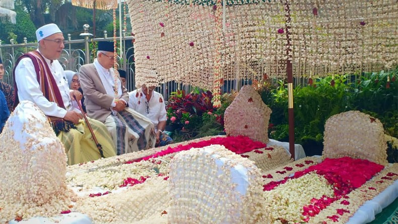

Sejarah dakwah (kisah para wali di tanah Jawa)
Syekh Jumadil Qubro, dan kedua anaknya, Maulana Malik Ibrahim dan Maulana Ishak bersama sama datang ke pulau Jawa. Setelah itu mereka berpisah, Syekh Jumadil Qubro tetap di pulau Jawa, Maulana Malik Ibrahim ke Champa, Vietnam Selatan, dan adiknya Maulana Ishak mengislamkan Samudra Pasai.
Di Kerajaan Champa, Maulana Malik Ibrahim berhasil mengislamkan raja Champa, yang akhirnya mengubah Kerajaan Champa menjadi kerajaan Islam. Akhirnya dia dijodohkan dengan putri raja Champa (adik Dyah Dwarawati), dan lahirlah Raden Rahmat. Di kemudian hari Maulana Malik Ibrahim hijrah ke Pulau Jawa tanpa diikuti keluarganya. Sunan Ampel (Raden Rahmat) datang ke pulau Jawa pada tahun 1443, untuk menemui bibinya, Dyah Dwarawati. Dyah Dwarawati adalah seorang putri Champa yang menikah dengan raja Majapahit yang bergelar Bhre Kertabhumi.
Sunan Ampel menikah dengan Nyai Ageng Manila, putri seorang adipati di Tuban yang bernama Arya Teja. Mereka dikaruniai 4 orang anak, yaitu:
1. Putri Nyai Ageng Maloka
2. Maulana Makdum Ibrahim (Sunan Bonang)
3. Syarifuddin (Sunan Drajat)
4. Syarifah, yang merupakan istri dari Sunan Kudus
Moh limo Mohlimo atau Molimo, Moh (tidak mau), limo (lima), adalah falsafah dakwah Sunan Ampel untuk memperbaiki kerusakan akhlak di tengah masyarakat pada zaman itu yaitu:
1. Moh Mabok : tidak mau minum minuman keras, khamr dan sejenisnya
2. Moh Main : tidak mau main judi, togel, taruhan dan sejenisnya
3. Moh Madon : tidak mau berbuat zina, homoseks, lesbian dan sejenisnya
4. Moh Madat : tidak mau memakai narkoba dan sejenisnya
5. Moh Maling: tidak mau mencuri, korupsi, merampok dan sejenisnya
Makam Sunan Ampel di Surabaya Pada tahun 1479, Sunan Ampel mendirikan Mesjid Agung Demak. Dan yang menjadi penerus untuk melanjutkan perjuangan dakwah dia di Kota Demak adalah Raden Zainal Abidin yang dikenal dengan Sunan Demak, dia merupakan putra dia dari istri dewi Karimah.Sehingga Putra Raden Zainal Abidin yang terakhir tercatat menjadi Imam Masjid Agung tersebut yang bernama Raden Zakaria (Pangeran Sotopuro). Sunan Ampel diperkirakan wafat pada tahun 1481 di Demak dan dimakamkan di sebelah barat Masjid Ampel, Surabaya.

©Copyright 2022-Farhan Ramadhani  Instagram: @danibos_granat
Instagram: @danibos_granat